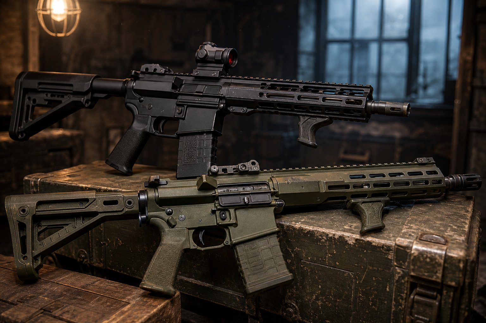
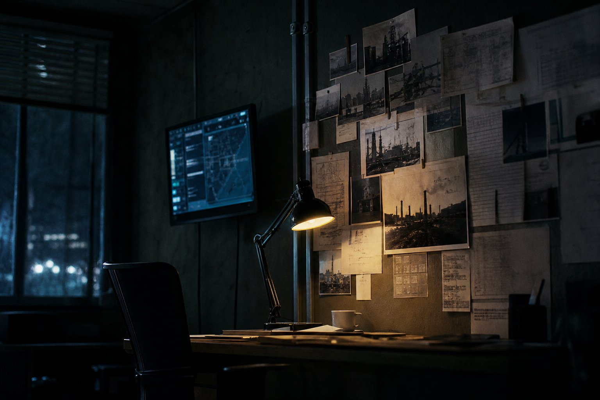

1. Le récapitulatif
Combat
Portées effectives augmentées, headshots renforcés, TTK global allongé, ricochets supprimés, RNG T5/T6 retiré, flashlight à -7 d'ergonomie.
Zombies
6 mutants, 2 modes dédiés (Infected Zone PvPvE, Zombie Endless PvE), No Man's Land, Zombie Research, 40 missions, marchand in-raid.
Équipement
A545 et AK-15SC, 4 season kits inaugurant le concept, plafonds d'équipement par mode, crafter violet illimité.
Économie
Marchand de terrain (vente, cargaisons mystères, intel), Elysium en drop rouge, Improvement Blueprint et formules de recherche.
Loot
Conteneurs exclusifs zombies, sacs de zombies, lance-roquettes qui fait tomber de la cargaison, air-drops massifs en fin de raid.
Événements
Supplies Drops 2.0 à 5 niveaux de crate, mission d'extermination, Warlord Tournament 3, Festival Biohazard & Automne.
2. Les deux nouvelles armes
| Arme | Positionnement | Caractéristique |
|---|---|---|
| A545 | Haut de gamme, « au niveau du U191 et du H416 » | Cadence 700 RPM — maniabilité contre le H416 à 800 RPM |
| AK-15SC | Fusil de dégâts élevés, « idéal pour le close-to-mid » | Dégâts brute dans la moyenne distance courte |
Ce sont les seules armes entièrement nouvelles du patch. Le reste de l'armurerie a été rééquilibré (voir le détail des patchs) et quatre season kits ont été ajoutés.
3. Les 4 season kits — une première dans ABI
La Saison 7 est la première fois qu'ABI introduit des attachements saisonniers. Ils ne sont pas cosmétiques : ils modifient fondamentalement l'arme.
| Kit | Arme | Effet |
|---|---|---|
| PCC-9 Full-Auto Kit | PCC-9 | La PCC-9 devient une arme automatique |
| M110 Dual-Stage Trigger | M110 | Déclencheur binaire : 2 projectiles par gâchette, dégâts massifs |
| FAL Recoil Kit | FAL | La cadence passe de « moyennement-faible » à « élevée », au prix d'une cadence légèrement réduite |
| MPX « Vulcan » Barrel | MPX Micro | Ouvre une branche de munitions à chair (meta jambes / chair) |
Les season kits rétrécissent le meta au lieu de l'élargir
Le risque identifié par la communauté : si un kit saisonnier supprime la principale faiblesse d'une arme déjà forte, le meta se referme au lieu de s'ouvrir. Les prix, la disponibilité et les pénalités d'attachement comptent donc autant que les avantages affichés dans le menu équipement.
4. Les nouveaux objets
| Catégorie | Objet | Effet |
|---|---|---|
| Tactique | M290 (nouvelle grenade stun) | Désormais craftable ; les formules de matériaux ont été réajustées |
| Zombie | Grenade phéromone | Attire les mutants vers un point choisi |
| Zombie | Fumigène de soin | Restaure progressivement la santé dans la zone |
| Zombie | Lance-roquettes | Provoque la chute de cargaison |
| Zombie | Contre-mesures zombie | Tirées au sort au marchand Endless, exclusives à la raid |
| Zombie | Réactifs expérimentaux | Pathfinder (+PV torse), Messenger (+vitesse), résistance aux blessures critiques — mais + dégâts subis et détection facilitée |
| Marchand | Cargaison mystère | Prix bas = rendement stable, prix élevé = jackpot ou perte |
| Rouge | Elysium | Nouveau drop rouge de l'Infected Zone, valeur équivalente à l'Utopia |
5. Les nouveaux collectibles rouges
- Elysium — drop rouge majeur de l'Infected Zone, garanti par la fin de la série de missions zombies.
- MRID laptop — nouveau collectible rouge ajouté en S7.
- Northern Stars, double-neck lute et emerald jade flute — nouveaux objets de collection rouges.
- Trophy Room : le niveau de la Collection Room augmente de +2 et la limite de stockage des drops rouges passe à 999. Le marquage rouge des nouvelles plaques d'identité est restreint à l'étagère dédiée.
6. Le nouveau système de recherche et de craft
- Improvement Blueprint — nouveau matériau de recherche, obtenu via les missions actives et les raids réguliers ; plus probable dans les boîtes à documents, les vêtements et les tiroirs.
- Un blueprint sert à rechercher une formule ; le résultat s'équipe pour accorder un buff unique.
- Partage de formules : apprendre et partager des formules avec des amis rapporte des blueprints d'assistance, prioritaires dans la file de recherche.
- Reset saisonnier : les résultats de recherche sont réinitialisés à chaque saison — un buff appris en S7 ne sert qu'en S7.
- Crafter violet : l'utilisation est illimitée mais il n'accepte que les objets de qualité violette ou inférieure. Son accès se débloque par niveau de crate.
7. Les nouvelles mécaniques de raid
- Terminaux : terminal normal (une interaction par squad pour un peu de XP de caisse) et terminal clandestin (à tenir/garnir après interaction, contestable par les autres squads, pour un gros lot de XP de caisse d'un coup).
- Horde de mutants : tirer sur les voitures de police déclenche un événement de horde. Certaines actions d'Operator en déclenchent aussi.
- Air-drops massifs en milieu et fin de raid, et unités IA en armure lourde sur les cartes.
- Retours plus rapides en début de raid, la durée de respawn augmentant au fil de la partie.
- Broadcasts in-raid des actions et de la voix ; le volume de la musique baisse automatiquement en multijoueur pour mieux entendre vos coéquipiers.
- Le crafter violet et l'augmentation des quantités de conteneurs et de rendement en raid.
8. Qualité de vie et correctifs
- Chargement de chargeur désormais disponible sur les pistolet et les fusils à pompe.
- Inspection interruptible en s'accroupissant ; contrôles de fin de soin améliorés ; gestes d'arme au corps redessinés.
- Perspectives 1ʳᵉ et 3ᵉ personne en inclinaison unifiées.
- Inspections de plaques d'identité animées selon le nombre de plaques portées, journal de dégâts détaillés sur les 30 dernières secondes d'un combat, et partage des temps forts et accomplissements d'une raid.
- Correctifs : sprint qui se bloquait par intermittence, audio qui disparaissait, longueur d'arme qui influençait le recul, valeurs de portée erronées sur les canons Vector 45 standard et moyen.
- La couverture du disque « Spark » a été redessinée ; le niveau de la Collection Room est relevé de 2 et le stockage rouge passe à 999.
9. Les événements de la saison
| Événement | Contenu |
|---|---|
| Supplies Drops 2.0 | 5 niveaux de crate de récompense ; on gagne de l'XP de crate en fouillant, en éliminant des joueurs et en utilisant les terminaux |
| Mission d'extermination | Récompense : Hazmat Suit Supply Passes (1 pass = 5 000 Koen à la fin de l'événement) |
| Warlord Tournament 3 | 29 oct. → 7 déc. 2026 : classement sur la valeur du loot, loadouts visibles, multiplicateur de fichier chiffré, intel de plaques d'identité, marque de leader de kill ; entrée à 400 K de gear minimum + 50 K de ticket, rang dédié de Recruit IV à Warlord |
| Biohazard & Automne | Festival du 24 sept. : check-in, boutique Bountiful Autumn, Défi de Vinson, Lunar Soil Sample (2×2, 780 000 Koen dans les coffres), Patrouille de zone sombre, Trash to Treasure |
| Défi de Merit | Hebdomadaire : meilleur Merit Endless = 3× Koen, jusqu'à 3 000 000 Koen par semaine |
| Zombie No Man's Land | Pass de check-in et paliers à 4 / 8 / 16 tâches quotidiennes ; les passes droppent aussi en raid infecté |
10. À retenir pour la route
Le résumé en 5 lignes
1) La contamination est le cœur de la saison : deux modes, six mutants, une progression permanente.
2) Le rééquilibrage est plus important que les zombies : plus de portée, headshots payants, T4/T5/T6 plafonnés par mode, pénétration déterministe.
3) Deux armes et quatre kits saisonniers arrivent, et le FAL / M110 / MPX / PCC-9 changent de nature.
4) L'économie se déplace en raid : marchand de terrain, cargaisons mystères, Elysium en drop rouge.
5) Commencez par No Man's Land, puis Valley en Infected Zone standard, et gardez votre stash rouge pour le Forbidden.
Pour aller plus loin : le guide de la Zone infectée, le guide Zombie Endless, l'arbre Zombie Research et le détail du rééquilibrage.